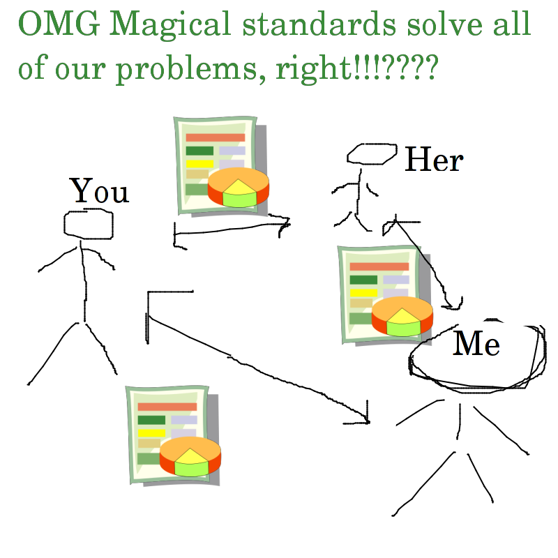
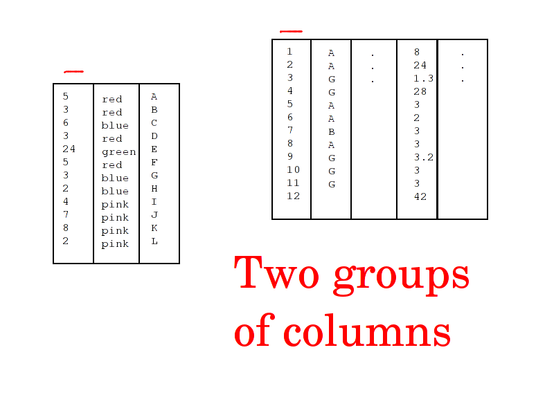

Tom does silly things with lots of spreadsheets.
"Open data"!?
Why nobody knows what's in these datasets

"file with lots of numbers in it",

Open data guidelines
- Open Knowledge Foundation Open Data Census
- Tim Berners-Lee Five Stars of open linked data.
- Open Government Working Group 8 Principles of Open Government Data
- Sunlight Foundation Open Data Policy Guidelines
- Open Data Institute Certificates
Standard Schemas
- RSS
- Atom
- GeoJson
- &c.


Graphs and stuff


Looking at lots of spreadsheets
- Reading the whole spreadsheet
- Documenting spreadsheets so it's easier to read them
- Standardizing formats so it's even easier to read them
- Graphs and stuff
Word of mouth


"Top Ten Elevator Offenders" dataset and couldn't stop laughing, mainly
What's in all these data
I like recursion
I heard you like spreadsheets
Column names: "grade", "year", "demographic", "numbertested", "meanscalescore", "numlevel1", "pctlevel1", "numlevel2", "pctlevel2", "numlevel3", "pctlevel3", "numlevel4", "pctlevel4", "numlevel3and4", "pctlevel3and_4"
Datasets with these column names:
- Math Test Results 2006-2012 - Citywide - Gender
- Math Test Results 2006-2012 - Citywide - Ethnicity
- English Language Arts (ELA) Test Results 2006-2012 - Citywide - SWD
- English Language Arts (ELA) Test Results 2006-2012 - Citywide - ELL
- Math Test Results 2006-2012 - Citywide - SWD
- English Language Arts (ELA) Test Results 2006-2012 - Citywide - All Students
- Math Test Results 2006-2012 - Citywide - ELL
- English Language Arts (ELA) Test Results 2006-2012 - Citywide - Gender
- Math Test Results 2006-2012 - Citywide - All Students
- English Language Arts (ELA) Test Results 2006-2012 - Citywide - Ethnicity
[{"id": "2bh6-qmgg", "name": "Math Test Results 2006-2012 - Citywide - Gender"}
, {"id": "vve2-26rs", "name": "Math Test Results 2006-2012 - Citywide - Ethnicity"}
, {"id": "d72n-ivax", "name": "English Language Arts (ELA) Test Results 2006-2012 - Citywide - SWD"}
, {"id": "72db-huua", "name": "English Language Arts (ELA) Test Results 2006-2012 - Citywide - ELL"}
, {"id": "ufu7-zp25", "name": "Math Test Results 2006-2012 - Citywide - SWD"}
, {"id": "89di-hi4s", "name": "English Language Arts (ELA) Test Results 2006-2012 - Citywide - All Students"}
, {"id": "ngbi-cq85", "name": "Math Test Results 2006-2012 - Citywide - ELL"}
, {"id": "cs9m-cz6f", "name": "English Language Arts (ELA) Test Results 2006-2012 - Citywide - Gender"}
, {"id": "fxwm-3t4n", "name": "Math Test Results 2006-2012 - Citywide - All Students"}
, {"id": "p5w7-g72z", "name": "English Language Arts (ELA) Test Results 2006-2012 - Citywide - Ethnicity"}
]

s <- read.csv('~/t/socrata-analysis/socrata-deduplicated.csv')
sum(is.na(s$nrow))
[1] 476
mean(s$nrow > 100, na.rm = T)
[1] 0.2507369
mean(s$nrow > 1000, na.rm = T)
[1] 0.1162797
mean(s$nrow > 10000, na.rm = T)
[1] 0.05230904
mean(s$nrow > 100000, na.rm = T)
[1] 0.01799659
Dataset sizes
In Socrata catalogs as of last summer,
- Only 25% of datasets had more than 100 rows.
- Only 12% of datasets had more than 1,000 rows.
- Only 5% of datasets had more than 10,000 rows.


Graphs?

"citizens" analyze data.
Main users
- Socrata employees
- Socrata clients (like data.gov)
- A bot
- Ordinary people making lots of different queries on the same spreadsheet
- People testing apps that take data from Socrata
Quantifying compliance with guidelines


This shouldn't be interesting
(Almost) Nobody knows what's in her data
It's hard to search for spreadsheets


SELECT * FROM datasets WHERE "ncol.date" > 3;


Why searching for spreadsheets is hard
- Site-specific search
- Naive search method
Guessing a schema
Brute-force guessing the observational unit
pip3 install special_snowflake
"Sepal.Length","Sepal.Width","Petal.Length","Petal.Width","Species"
5.1,3.5,1.4,0.2,"setosa"
4.9,3,1.4,0.2,"setosa"
4.7,3.2,1.3,0.2,"setosa"
4.6,3.1,1.5,0.2,"setosa"
...
$ snowflake iris.csv
"Id","Sepal.Length","Sepal.Width","Petal.Length","Petal.Width","Species"
1,5.1,3.5,1.4,0.2,"setosa"
2,4.9,3,1.4,0.2,"setosa"
3,4.7,3.2,1.3,0.2,"setosa"
4,4.6,3.1,1.5,0.2,"setosa"
...
$ snowflake iris.csv
Id
"weight","Time","Chick","Diet"
42,0,"1","1"
51,2,"1","1"
59,4,"1","1"
64,6,"1","1"
76,8,"1","1"
...
$ snowflake chick.csv
Time, Chick
$ wget -O poste.csv http://data.iledefrance.fr/explore/dataset/liste-des-points-de-contact-du-reseau-postal-dile-de-france/download/?format=csv
$ snowflake poste.csv
adresse, code_postal
adresse, localite
identifiant
libelle_du_site
wgs84
Brute-force guessing foreign keys




Search Engine


pip3 install commasearch
, --index this.csv that.csv and.csv so.csv on.csv
pluplusch --urls | , --index -
, --verbose http://www-static.bouldercolorado.gov/docs/opendata/2000_Construction_Permits.csv
{"url": "http://data.ottawa.ca/storage/f/2013-04-16T201942/RingPost_Master_List_-Feb12_2013.csv", "search_columns": [4], "overlap": 4, "result_columns": [10], "nrow": 809}
{"url": "http://data.ottawa.ca/storage/f/2013-04-16T201942/RingPost_Master_List_-Feb12_2013.csv", "search_columns": [5], "overlap": 0, "result_columns": [10], "nrow": 809}
{"url": "http://data.ottawa.ca/storage/f/2013-04-16T201942/RingPost_Master_List_-Feb12_2013.csv", "search_columns": [6], "overlap": 0, "result_columns": [10], "nrow": 809}
{"url": "http://data.ottawa.ca/storage/f/2013-04-16T201942/RingPost_Master_List_-Feb12_2013.csv", "search_columns": [7], "overlap": 0, "result_columns": [10], "nrow": 809}
{"url": "http://data.ottawa.ca/storage/f/2013-04-16T201942/RingPost_Master_List_-Feb12_2013.csv", "search_columns": [8], "overlap": 1, "result_columns": [10], "nrow": 809}
{"url": "http://data.ottawa.ca/storage/f/2013-04-16T201942/RingPost_Master_List_-Feb12_2013.csv", "search_columns": [9], "overlap": 5, "result_columns": [10], "nrow": 809}
{"url": "http://data.ottawa.ca/storage/f/2013-04-16T201942/RingPost_Master_List_-Feb12_2013.csv", "search_columns": [10], "overlap": 138, "result_columns": [10], "nrow": 809}
{"url": "http://data.ottawa.ca/storage/f/2013-04-16T201942/RingPost_Master_List_-Feb12_2013.csv", "search_columns": [11], "overlap": 132, "result_columns": [10], "nrow": 809}
{"url": "http://data.ottawa.ca/storage/f/2013-04-16T201942/RingPost_Master_List_-Feb12_2013.csv", "search_columns": [12], "overlap": 556, "result_columns": [10], "nrow": 809}
$ head -n5 2000_Construction_Permits.csv
Case Number,Address,Assessor ID,Case Status,Category,Building Uses and Work Scopes,Permit Types, Total Project Value , Total Subpermit Value ,Applied,Approved,Issued,CO Date,Completion Date,New Res Unit,Existing Res Unit,Affordable Hsg Unit,New SF,Remodel SF,Narrative Description,Primary First Name,Primary Last Name,Primary Company,Contractor First Name,Contractor Last Name,Contractor Company,Owner1 First Name,Owner1 Last Name,Owner1 Company,Owner2 First Name,Owner2 Last Name,Owner2 Company
PMT2000-00001,1343 WILDWOOD CT,0066684,REV,Residential,"Single Family Detached Dwelling, Existing",Mechanical, $899.00 , $899.00 ,1/7/2000,1/7/2000,12/17/2099,,,,1,,,,GAS LOG INSERT,,THE GAS CONNECTION,THE GAS CONNECTION,,THE GAS CONNECTION,THE GAS CONNECTION,ALEXANDER,BROWN,,,KATHY VOGELEY,
PMT2000-00002,263 PEARL ST 8,0101764,N&V,Residential,"Townhomes, Existing",Mechanical," $1,250.00 "," $1,250.00 ",1/7/2000,1/7/2000,12/17/2099,,,,1,,,,GAS LOGS IN FIREPLACE AND GAS STOVE IN KITCHEN,,NORM'S PLUMBING AND HEATING,NORM'S PLUMBING AND HEATING,,NORM'S PLUMBING AND HEATING,NORM'S PLUMBING AND HEATING,ROBERT,JUSTIS,,LESLIE,N,
PMT2000-00003,3000 WALNUT ST,0065954,CLS,NonResidential,"Commercial/Retail, Existing",Electrical, $600.00 , $600.00 ,1/7/2000,1/7/2000,12/17/2099,,,,,,,,ELECTRICAL WIRING FOR 2 ELECTRIC SIGNS,,"AAA ELECTRIC COMPANY, INC.","AAA ELECTRIC COMPANY, INC.",,"AAA ELECTRIC COMPANY, INC.","AAA ELECTRIC COMPANY, INC.",TERRENCE,OCONNOR,,,MIDAS,
PMT2000-00004,2515 BROADWAY,0003260,N&V,Residential,"Single Family Detached Dwelling, Existing",Mechanical," $1,950.00 "," $1,950.00 ",1/7/2000,1/7/2000,12/17/2099,,,,1,,,,INSTALL 65000 BTU SPACE HEATER IN LIVING ROOM,,CONTROL SERVICE CENTER INC,CONTROL SERVICE CENTER INC,,CONTROL SERVICE CENTER INC,CONTROL SERVICE CENTER INC,HOSPITAL,COMMUNITY,,,MOCK PROPERTY MANAGEMENT,
$ head -n5 RingPost_Master_List_-Feb12_2013.csv
Post_ID,Mid_block_ID,Street_1,Street_2,Street_3,Side,Adjacent_to,latitude,longitude,Core,Notes
1,1,Laurier Ave E,Henderson Ave,Nelson St,South,210 Laurier Ave E,45.42571,-75.681794,New,
2,1,Laurier Ave E,Henderson Ave,Nelson St,South,210 Laurier Ave E,45.425816,-75.681558,New,
3,1,Laurier Ave E,Henderson Ave,Nelson St,South,238 Laurier Ave E,45.425902,-75.681247,New,
4,2,Laurier Ave E,Cumberland St,Waller St,North,75 Laurier Ave E,45.42408,-75.686239,New,
Attempts at understanding all these datasets
- Write data dictionaries, &c.
- Agree on standards
- Make graphs and stuff
- Ask someone
My approach: Brute force
???
"Search"
Relevance
1. Nobody understands her own data. (You're not the only one.)
2. If people aren't documenting their data, don't expect them to document their data
3. Brute force can help you understand your data